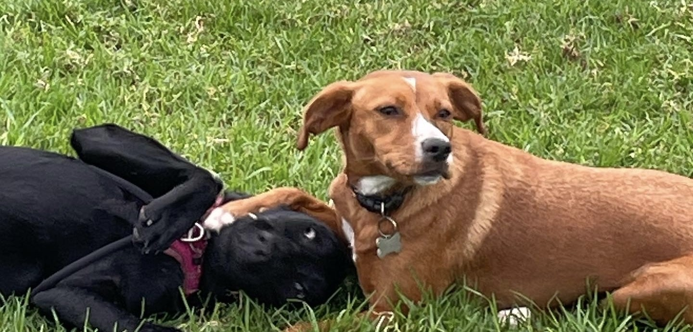

5 Tips for Stress-Free Walks (One Dog Only)
Our simple formula for focused, happy walks around South Melbourne.
1) One Dog, One Walker
Pack walks can increase arousal and risk. Walking one dog at a time lets us focus on body language, pacing, and positive reinforcement.
2) The Right Gear
Use a well-fitting harness, a standard lead (not a retractable), and ID tags. We’ll guide you on fit during the trial call.
3) Calm Start & Finish
We begin with a quick check-in and end with a brief cool-down and water. You’ll get photos and a GPS map in your portal.
4) Smart Routes
We prefer quieter streets, local parks, and the beach when suitable. We avoid busy intersections and dog-dense zones if needed.
5) Consistency Wins
Regular walks build confidence and fitness. Our memberships make that easy and more affordable.